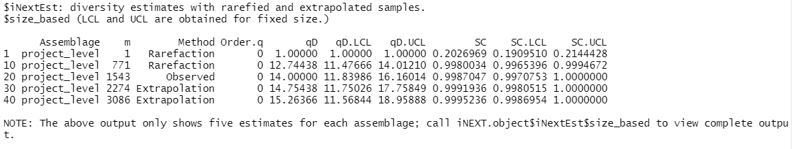
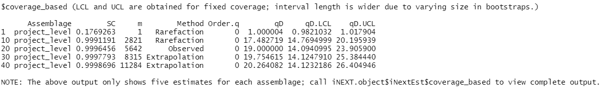
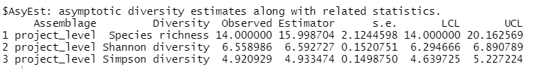
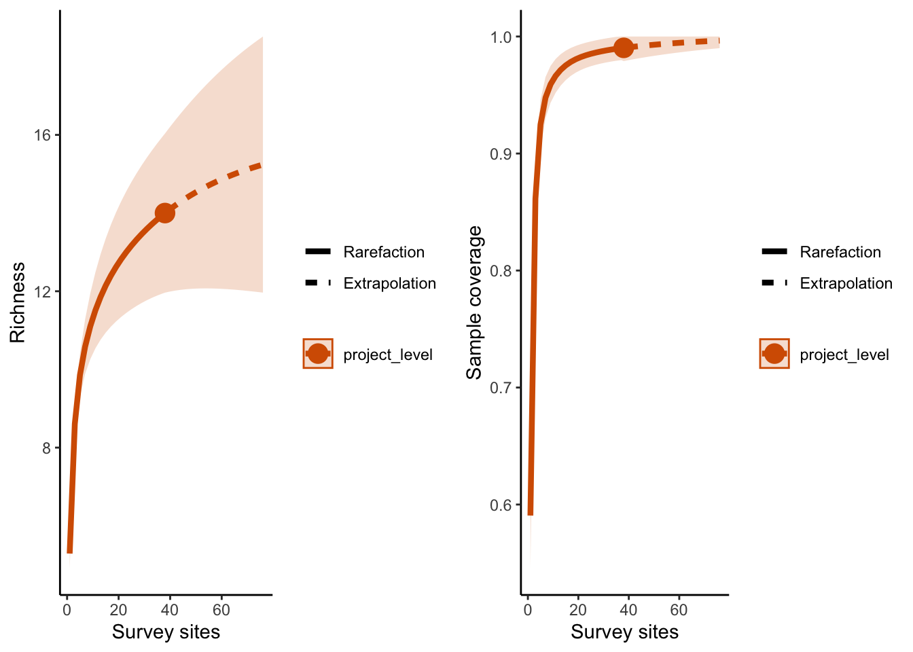
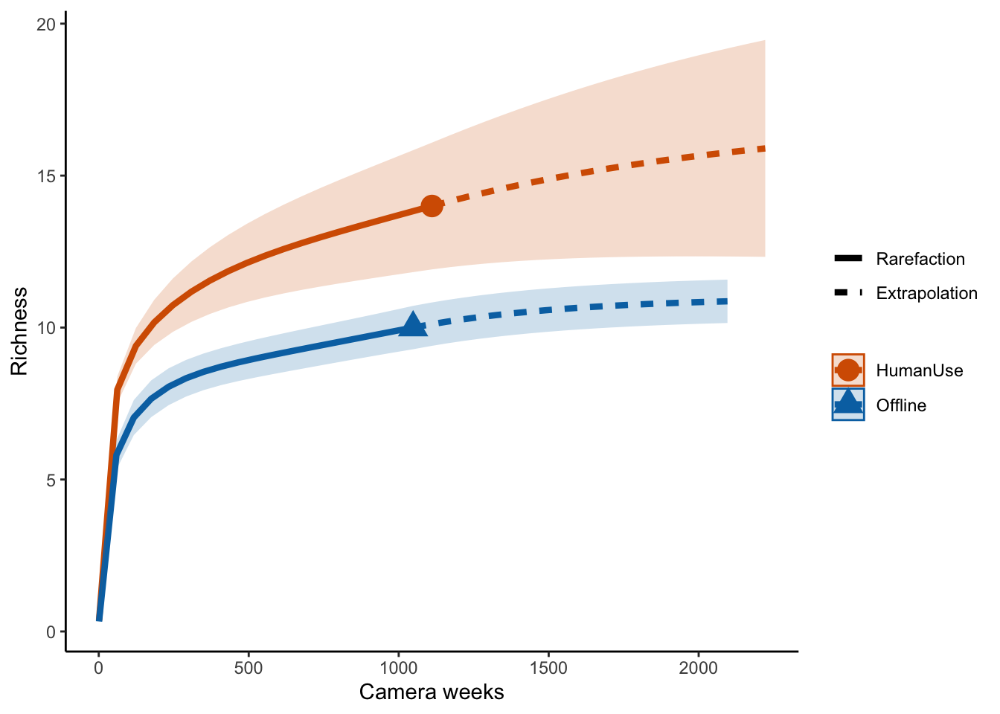
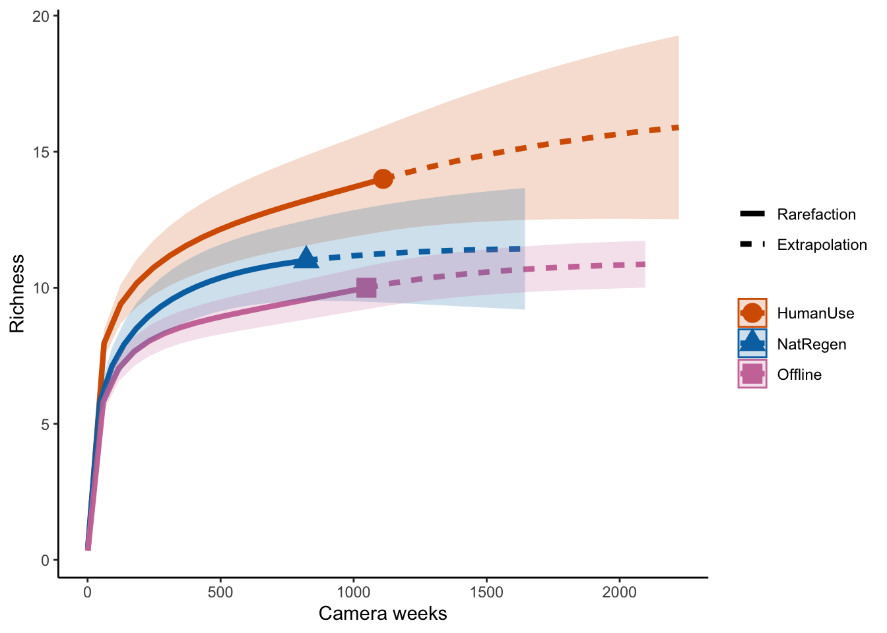
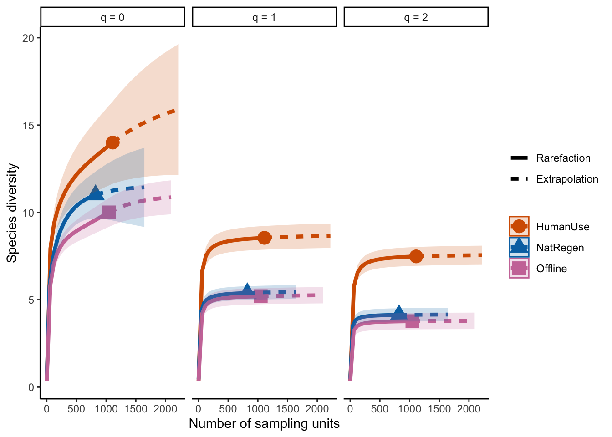
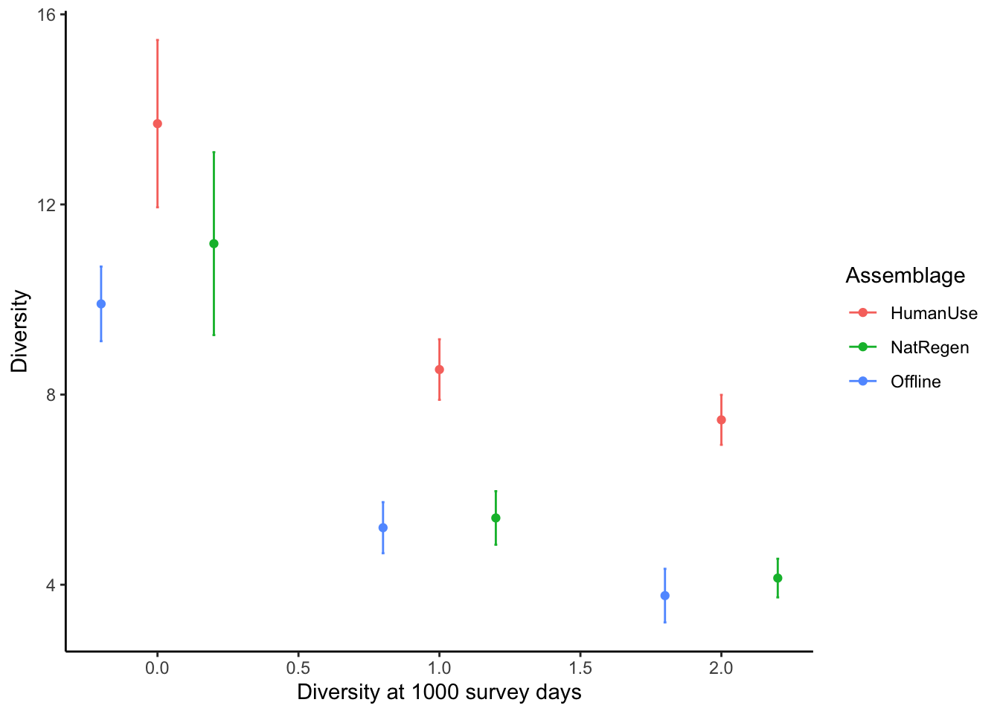

Chapter 9 Community composition
By Christopher Beirne and Laura Stewart
One of the most fundamental questions researchers and practitioners want to answer is how many species are there in my survey area?. Exploring patterns in species richness can also tell us if we have performed ‘enough’ surveying.
Create a new .R script
Call it 04_example_richness.R.
Load the required packages
# Check you have them and load them
list.of.packages <- c("iNEXT", "kableExtra", "tidyr", "ggplot2", "gridExtra", "dplyr", "viridis")
new.packages <- list.of.packages[!(list.of.packages %in% installed.packages()[,"Package"])]
if(length(new.packages)) install.packages(new.packages)
lapply(list.of.packages, require, character.only = TRUE)9.1 Observed richness
The simplest way to quantify species richness is counting the number of species you detect on your camera traps - ‘observed richness’. This is very easy to determine using our species list:
sp_summary <- read.csv("data/processed_data/AlgarRestorationProject_species_list.csv", header=T)
# Use nrow() to count the number of species
nrow(sp_summary)## [1] 14In the case of the example data set, this represents 14 mammal species.
| class | order | family | genus | species | sp | common_name | mass_g | act_noct | act_crep | act_diur |
|---|---|---|---|---|---|---|---|---|---|---|
| Mammalia | Artiodactyla | Cervidae | Alces | alces | Alces.alces | moose | 356998.16 | 1 | 1 | 0 |
| Mammalia | Artiodactyla | Cervidae | Cervus | canadensis | Cervus.canadensis | elk | 165015.85 | 1 | 1 | 0 |
| Mammalia | Artiodactyla | Cervidae | Odocoileus | virginianus | Odocoileus.virginianus | white-tailed deer | 55508.56 | 1 | 1 | 0 |
| Mammalia | Artiodactyla | Cervidae | Rangifer | tarandus | Rangifer.tarandus | caribou | 86033.98 | 0 | 0 | 1 |
| Mammalia | Carnivora | Canidae | Canis | latrans | Canis.latrans | coyote | 13406.33 | 1 | 1 | 0 |
| Mammalia | Carnivora | Canidae | Canis | lupus | Canis.lupus | gray wolf | 32183.33 | 1 | 1 | 0 |
| Mammalia | Carnivora | Canidae | Vulpes | vulpes | Vulpes.vulpes | red fox | 5476.17 | 1 | 1 | 0 |
| Mammalia | Carnivora | Felidae | Lynx | canadensis | Lynx.canadensis | canada lynx | 9373.25 | 1 | 0 | 0 |
| Mammalia | Carnivora | Mustelidae | Lontra | canadensis | Lontra.canadensis | river otter | 8087.42 | 1 | 1 | 0 |
| Mammalia | Carnivora | Mustelidae | Martes | americana | Martes.americana | american marten | 1250.00 | 1 | 0 | 0 |
| Mammalia | Carnivora | Ursidae | Ursus | americanus | Ursus.americanus | black bear | 99949.36 | 1 | 0 | 0 |
| Mammalia | Lagomorpha | Leporidae | Lepus | americanus | Lepus.americanus | snowshoe hare | 1710.02 | 1 | 0 | 0 |
| Mammalia | Lagomorpha | Leporidae | Oryctolagus | cuniculus | Oryctolagus.cuniculus | rabbit | 1832.22 | 1 | 0 | 0 |
| Mammalia | Rodentia | Sciuridae | Tamiasciurus | hudsonicus | Tamiasciurus.hudsonicus | red squirrel | 201.17 | 0 | 0 | 1 |
It is possible to compare observed richness across different strata of interest, however survey effort must be identical between your comparison strata. This very rarely the case in camera trap studies where cameras break, run out of battery or are deployed for different lengths of time.
The number of species you detect is a function of the amount of effort you spent surveying/the number of individuals detected - the longer a camera is active/the more individuals detected, the more species it will detect. What this means is, unless you saturate a landscape with camera traps, observed richness will underestimate true richness. Consequently, We need ways of comparing species richness which accounts in some way for survey effort.
9.2 Estimated richness
There are two commonly used ways to account for survey effort when estimating species richness using camera traps:
- using the incidence of rare species to ‘correct’ observed richness (
iNext) - using multispecies occupancy models to account for the species present but not observed (occupancy model)
9.2.1 iNext package
The iNext package (INterpolation and EXTrapolation of species richness) - is both easy to use and rapid to compute. It also comes with a wealth of plotting functions - see the iNext Quick Introduction for a great walk through tutorial. Its core functionality is based on:
Chao, Anne, et al. “Rarefaction and extrapolation with Hill numbers: a framework for sampling and estimation in species diversity studies.” Ecological monographs 84.1 (2014): 45-67. Which has, to date, been cited >2000 times!
To run this example code you will need to load the iNEXT , ggplot2, and gridExtra packages.
Single strata
You may want to see if your camera project has sufficient survey effort to capture the species within the area of interest. To do this we can compute a species accumulation curves across the site as a whole. Species accumulation curves plot the increase in species richness as we add survey units. If the curve plateaus (flattens), then that suggests you have sampled the majority of the species in your survey area.
9.3 Sampling-unit-based accumulation curves
In camera trap projects we typically think about our survey effort in terms of the number of camera stations we deploy on the landscape or the units of time they are active (e.g. camera days).
Performing our species accumulation curves using survey location allows us to determine if we have enough survey locations in a given strata to detect all of the species present. Repeating the analyses using camera days would also give insight into whether we need more survey effort in a given location.
Data formatting
The data formatting for a sampling-unit based accumulation curve is as follows: we need to create a list object with each strata as elements in that list. Next we nest a vector of numbers within each element, the first represents the number of sampling units surveyed, then the number of those units where each given species was detected following it.
The example that comes with the iNext package looks like this.

The yellow number is the total number of survey units in each location, the red numbers are the number of sites in which each species occurs.
We can create this format from the total observations file:
total_obs <- read.csv("data/processed_data/AlgarRestorationProject_30min_independent_total_observations.csv", header=T)
inc_dat <- total_obs %>%
mutate(across(sp_summary$sp, ~+as.logical(.x))) # Turn species counts into 0's and 1's
# Make an empty list to store our data
project_level <- list()
# # Sum all of the observations of each species (colSums), and then make it an element within the project_level list
project_level[[1]] <- c(nrow(inc_dat), # First count the number of stations
# Then subset the detections to those stations, sum the columns, and sort the incidents
inc_dat[, sp_summary$sp] %>% colSums() %>% sort(decreasing=T))
# # Give it a name
names(project_level) <- "project_level"This produces a list object which looks like this:
## $project_level
## Alces.alces Ursus.americanus
## 38 34 31
## Odocoileus.virginianus Lynx.canadensis Rangifer.tarandus
## 27 21 20
## Lepus.americanus Canis.lupus Martes.americana
## 19 17 13
## Vulpes.vulpes Tamiasciurus.hudsonicus Canis.latrans
## 6 6 3
## Oryctolagus.cuniculus Cervus.canadensis Lontra.canadensis
## 2 1 1And let’s run our iNext model:
out <- iNEXT(project_level, # The data frame
q=0, # The type of diversity estimator (see discussion of the options below)
datatype="incidence_freq", # The type of analysis
knots=40, # The number of data points in your line (more = smoother)
se=TRUE, # Logical statement if you want confidence intervals
conf=0.95, # The level of confidence intervals
nboot=50) # The number of replications to perform - this generates your confidence interval - the bigger the number the longer the run timea note on q values
The iNEXT package uses the concept of hill numbers to calculate its community indices. The q values reflect traditional diversity estimators:
- 0 = species richness
- 1 = Shannon diversity
- 2 = Simpson diversity
They differ in the weighting of rare species. 0 treats the ‘value’ of every species equally, rare or common. As the the q value increases, the influence of rare species becomes weaker and weaker.
a note on coverage
Whilst many users will be familiar with diversity indices, iNEXT also calculates ‘sample coverage’ - the proportion of the total number of individuals that belong to the species detected in the sample. The way to conceptualize this is - if you add an un-surveyed individual to the surveyed population, what is the likelihood it belongs to the species not already detected? If your sample coverage is high, this probability will be very low!
We will start with observed richness.
The iNEXT() function returns the “iNEXT” object including three output lists:
- $DataInfo for summarizing data information
- $iNextEst for showing size- and coverage-based diversity estimates along with related
statistics for a series of rarefied and extrapolated samples
- $AsyEst for showing asymptotic diversity estimates along with related statistics.
Lets check out each one in turn:
$DataInfo is shown below, returns summary data such as the reference sample size (n), observed species richness (S.obs - which is hopefully the same as what we calculated above), sample coverage estimate for the reference sample (SC), and the first ten frequency counts (f1‐f10).

$iNextEst output includes two data frames: $size_based and $coverage_based.
Let’s first look at $iNextEst$size_based:

Next $iNextEst$coverage_based:

$AsyEst gives the asymptotic estimates and their related statistics.

One of the powerful elements of iNEXT is that it can extrapolate beyond your data, this is very useful when you do not have equal sample sizes.
9.4 Basic results plot
p1 <- ggiNEXT(out, type=1)+ theme_classic() + # type 1 = the diversity estimator
labs(x = "Survey sites", y = "Richness")
p2 <- ggiNEXT(out, type=2)+ theme_classic() + # type 2 = the survey coverage
labs(x = "Survey sites")
grid.arrange(p1, p2, nrow = 1)
Multiple strata
The iNEXT package gets really interesting when we start to compare multiple different strata. e.g. different treatment types or species groupings.
The code to build a multi-strata comparison is very similar to that of a single strata, except now you separate the observations into their relevant categories/strata.
We will compare the different categories using the feature_type column in the covariate file. We match the ‘placenames’ in our locations dataframe with the corresponding capture data in total_obs using the %in% command.
# Read in the locations data frame
locs <- read.csv("data/processed_data/AlgarRestorationProject_camera_locations_and_covariates.csv")
# We first want to create a data subset for each of the strata we are interested in:
# The treatment types for each Deployment.Location.ID are in the sta file
# Make an object containing all of the site ID's for the "Offline" cameras
off <- locs$placename[locs$feature_type=="Offline"]
# And "HumanUse" cameras
hum <- locs$placename[locs$feature_type=="HumanUse"]
# Create a new empty list
inc_locations <- list()
# Only sum the data for each relvent locations
inc_locations[[1]] <- c(length(off), # First count the number of stations
# Then subset the detections to those stations, sum the columns, and sort the incidents
inc_dat[inc_dat$placename %in% off, sp_summary$sp] %>% colSums() %>% sort(decreasing=T))
inc_locations[[2]] <- c(length(hum), # Count the number of stations
# Then subset the detections to those stations, sum the columns, and sort the incidents
inc_dat[inc_dat$placename %in% hum, sp_summary$sp] %>% colSums() %>% sort(decreasing=T))
# Give them names
names(inc_locations) <- c("Offline", "HumanUse")And let’s run our iNext model:
out.inc <- iNEXT(inc_locations, q=0, datatype="incidence_freq")
# Sample‐size‐based R/E curves
ggiNEXT(out.inc, type=1, color.var="Assemblage") +
labs(y="Richness", x = "Locations surveyed") +
theme_classic() 
So it looks like the human use features are more diverse than the offline features.
9.4.1 Sampling duration example
If we want to explore the species accumulation patterns as a function of the number of survey duration, we can make use of the ...weekly_observations dataframes.
week_obs<- read.csv("data/processed_data/AlgarRestorationProject_30min_independent_weekly_observations.csv", header=T)
# Turn it into binary incidents
inc_dat <- week_obs %>% mutate(across(sp_summary$sp, ~+as.logical(.x)))
# Create a new empty list
inc_time <- list()
# Only sum the data for each relevent strata
inc_time[[1]] <- c(nrow(inc_dat[inc_dat$placename %in% off,]), # Count the number of weeks we have data for in each strata
# Then subset the detections to those stations, sum the columns, and sort the incidents
inc_dat[inc_dat$placename %in% off, sp_summary$sp] %>% colSums() %>% sort(decreasing=T))
inc_time[[2]] <- c(nrow(inc_dat[inc_dat$placename %in% hum,]), # Count the number of stations
# Then subset the detections to those stations, sum the columns, and sort the incidents
inc_dat[inc_dat$placename %in% hum, sp_summary$sp] %>% colSums() %>% sort(decreasing=T))
# Give them names
names(inc_time) <- c("Offline", "HumanUse")And run the model:
## Warning in Fun(x[[i]], q, names(x)[i]): Insufficient data to provide reliable
## estimators and associated s.e.
## Warning in Fun(x[[i]], q, names(x)[i]): Insufficient data to provide reliable
## estimators and associated s.e.# Sample‐size‐based R/E curves
ggiNEXT(out.inc, type=1, color.var="Assemblage") +
labs(y="Richness", x = "Camera weeks") +
theme_classic() 
Which suggests the same pattern!
9.4.2 On your own
Simple: Repeat the comparison for all feature types (NetReg, Offline and HumanUse).
Advanced: Compare the species accumulate curves at the site level for small (<10 kg) and large mammals (>10kg)
# Create a new empty list
inc_time <- list()
# The treatment types for each Deployment.Location.ID are in the sta file
# Make an object containing all of the site ID's for the "Offline" cameras
off <- locs$placename[locs$feature_type=="Offline"]
# And "HumanUse" cameras
hum <- locs$placename[locs$feature_type=="HumanUse"]
regen <- locs$placename[locs$feature_type=="NatRegen"]
# Only sum the data for each relevent strata
inc_time[[1]] <- c(nrow(inc_dat[inc_dat$placename %in% off,]), # Count the number of weeks we have data for in each strata
# Then subset the detections to those stations, sum the columns, and sort the incidents
inc_dat[inc_dat$placename %in% off, sp_summary$sp] %>% colSums() %>% sort(decreasing=T))
inc_time[[2]] <- c(nrow(inc_dat[inc_dat$placename %in% hum,]), # Count the number of stations
# Then subset the detections to those stations, sum the columns, and sort the incidents
inc_dat[inc_dat$placename %in% hum, sp_summary$sp] %>% colSums() %>% sort(decreasing=T))
inc_time[[3]] <- c(nrow(inc_dat[inc_dat$placename %in% regen,]), # Count the number of stations
# Then subset the detections to those stations, sum the columns, and sort the incidents
inc_dat[inc_dat$placename %in% regen, sp_summary$sp] %>% colSums() %>% sort(decreasing=T))
# Give them names
names(inc_time) <- c("Offline", "HumanUse", "NatRegen")## Warning in Fun(x[[i]], q, names(x)[i]): Insufficient data to provide reliable
## estimators and associated s.e.
## Warning in Fun(x[[i]], q, names(x)[i]): Insufficient data to provide reliable
## estimators and associated s.e.
## Warning in Fun(x[[i]], q, names(x)[i]): Insufficient data to provide reliable
## estimators and associated s.e.# Sample‐size‐based R/E curves
ggiNEXT(out.inc, type=1, color.var="Assemblage") +
labs(y="Richness", x = "Camera weeks") +
theme_classic() 
9.5 Other diversity metrics
9.5.1 Simpson and Shannon
One issue with species richness assessments is that they weight all species equally, thus a community with 12 species all present in equal abundances will give you the same richness value as a high skewed community with one highly abundant species, and 11 very rare ones. Consequently, you might want to estimate species diversity.
Luckily, the iNEXT package is well suited for comparisons of diversity indices through the use of hill numbers - of which the ‘q’ value represents the traditional Shannon (q=1) and Simpson (q=2) diversity indices (species richness: q = 0). Note Increasing values of q reduces the influence of rare species on your estimate of community diversity.
For example, we might want to compare the species diversity across our two focal strata:
# We also introduce the object t -> which reflects the range of values over which you want to predict species richness
out <- iNEXT(inc_time, q=c(0,1,2) ,datatype="incidence_freq" )
ggiNEXT(out, type=1, facet.var="Order.q", color.var="Assemblage") + theme_classic() 
The plot above shows that the differences between our two strata remain across increasing q values (suggesting that the differences between sites are being driven by several rarely encountered species).
Point estimates and their confidence intervals can also be extracted from iNEXT model objects - but it does require a little data wrangling. For example, if we wanted to directly compare the diversity estimates of our strata at 1000 survey units:
# To generate predictions for specific amounts of survey effort, we make use of the variable t
# T specifies the values you want iNEXt to calculate diversity for
out <- iNEXT(inc_time, q=c(0,1,2) ,datatype="incidence_freq", size=c(1000))
# The lapply function applies the same logic across elements in a list
point_estimate <- out$iNextEst$size_based[out$iNextEst$size_based$t==1000,]
point_estimate## Assemblage t Method Order.q qD qD.LCL qD.UCL
## 1 Offline 1000 Rarefaction 0 9.908397 8.931160 10.885634
## 5 Offline 1000 Rarefaction 1 5.199616 4.699571 5.699660
## 9 Offline 1000 Rarefaction 2 3.770656 3.335277 4.206034
## 13 HumanUse 1000 Rarefaction 0 13.700080 11.853768 15.546393
## 17 HumanUse 1000 Rarefaction 1 8.526882 8.030752 9.023012
## 21 HumanUse 1000 Rarefaction 2 7.468354 7.016983 7.919725
## 28 NatRegen 1000 Extrapolation 0 11.175535 9.216856 13.134214
## 32 NatRegen 1000 Extrapolation 1 5.404507 4.923345 5.885670
## 36 NatRegen 1000 Extrapolation 2 4.139836 3.715067 4.564605
## SC SC.LCL SC.UCL
## 1 0.9942029 0.9915061 0.9968996
## 5 0.9942029 0.9915061 0.9968996
## 9 0.9942029 0.9915061 0.9968996
## 13 0.9925184 0.9873761 0.9976607
## 17 0.9925184 0.9873761 0.9976607
## 21 0.9925184 0.9873761 0.9976607
## 28 0.9982324 0.9931816 1.0000000
## 32 0.9982324 0.9931816 1.0000000
## 36 0.9982324 0.9931816 1.0000000# Make a nice ggplot!
ggplot(point_estimate, aes(x=c(-0.2,0.8, 1.8,
0,1,2,
0.2, 1.2, 2.2), y=qD, colour=Assemblage)) +
theme_classic() +
#scale_x_discrete(breaks=c("1","2"),labels= c("1","2")) +
geom_errorbar(aes(ymin=qD.LCL, ymax=qD.UCL), width=.01) +
labs(y="Diversity", x = "Diversity at 1000 survey days") +
geom_point() 
9.5.2 More examples in the literature
Some examples of using iNEXT with camera trap data:
Cusack et al. 2015 Random versus Game Trail-Based Camera Trap Placement Strategy for Monitoring Terrestrial Mammal Communities
Kays et al. 2020 An empirical evaluation of camera trap study design: How many, how long and when?
Semper-Pascual et a. 2018 Mapping extinction debt highlights conservation opportunities for birds and mammals in the South American Chaco
Publishing note
If you publish your work based on the results from the iNEXT package, you should make references to the following methodology paper (Chao et al. 2014) and the application paper (Hsieh, Ma & Chao, 2016):
Chao A, Gotelli NJ, Hsieh TC, Sande EL, Ma KH, Colwell RK, Ellison AM (2014). “Rarefaction and extrapolation with Hill numbers: a framework for sampling and estimation in species diversity studies.” Ecological Monographs, 84, 45–67.
Hsieh TC, Ma KH, Chao A (2022). iNEXT: Interpolation and Extrapolation for Species Diversity. R package version 3.0.0, http://chao.stat.nthu.edu.tw/wordpress/software_download/.
9.6 Community structure
One of the shortfalls in the diversity index approaches is that you can compare two sites with completely different mammal assemblages, but identical diversity estimates! So we would conclude that the two are the same, however,in reality their compositions are totally different. Another way to assess community structure is with ordination methods (e.g non-metric multidimensional scaling or NMDS).
For a fantastic (although now somewhat dated) blog on NMDS methods see: Sample(ecology)’s NMDS tutorial in R.
Luckily a basic NMDS is very easy to run from our ...total_observations dataframe:
#install.packages("vegan")
library(vegan)
# Import your count data
total_obs <- read.csv("data/processed_data/AlgarRestorationProject_30min_independent_total_observations.csv", header=T)
#Import the location and covariate data
locs <- read.csv("data/processed_data/AlgarRestorationProject_camera_locations_and_covariates.csv")
# Add the covariates to your total_obs dataframe
dat <- left_join(total_obs, locs)
# Convert to categorical factors
dat <- dat %>%
mutate_if(is.character,as.factor)
# Subset to just the count columns
counts <- dat[,sp_summary$sp]
# Covert it into a matrix
m_counts <- as.matrix(counts)We are now ready to run our NMDS model:
set.seed(123) # To make sure we all get the same result
# run metaMDS on the count matrix using the " Bray-Curtis dissimilarity" note others are available
nmds = metaMDS(m_counts, # The count matrix
distance = "bray", # The method of solving
trace=0) # Supress the output - trace=1 is more informativeAnd check the output:
##
## Call:
## metaMDS(comm = m_counts, distance = "bray", trace = 0)
##
## global Multidimensional Scaling using monoMDS
##
## Data: wisconsin(sqrt(m_counts))
## Distance: bray
##
## Dimensions: 2
## Stress: 0.2235068
## Stress type 1, weak ties
## Best solution was not repeated after 20 tries
## The best solution was from try 0 (metric scaling or null solution)
## Scaling: centring, PC rotation, halfchange scaling
## Species: expanded scores based on 'wisconsin(sqrt(m_counts))'9.6.1 Extracting data for plotting
To make a nice plot of the NMDS data we need to learn how to extract the data from it:
# Make a dataframe out of the x and Y scores
site.scores <- as.data.frame(scores(nmds)$sites)
species.scores <- as.data.frame(scores(nmds)$species)
# Add in the covariate data
#add covariate columns to data frame
site.scores$placename <- dat$placename
site.scores$feature_type <- dat$feature_type
# Assign colors to our feature_types using viridis
# then use the turbo() function to assign each level a color
col.cat <- cividis(length(levels(dat$feature_type)))
# then we apply it to the dataframe
dat$colours <- col.cat[dat$feature_type]Lets make a plot in base R using the default plotting functions:
par(mfrow=c(1,1))
# Make an empty plot type="n
ordiplot(nmds,type="n", las=1,
xlim=c(-1.5,1.2))
# Add an elipse corresponding to each site
ordiellipse(nmds, groups=dat$feature_type,
col=col.cat, lwd=2)
# Add the species loadings
orditorp(nmds,display="species",col="red",air=0.5)
# Add the site loadings
points(site.scores$NMDS1, site.scores$NMDS2, col=dat$colours, pch=19)
# Add a legend
legend("topleft", levels(dat$feature_type), col=col.cat, pch=19 )
The different feature_types to not differ majorly in their species compositions - there is a huge degree of overlap between sites.
The NMDS framework is flexible - we can also add environmental covariates using envfit to explain differences we might find. Checkout a great blog on this by Jackie Zorz for more information!